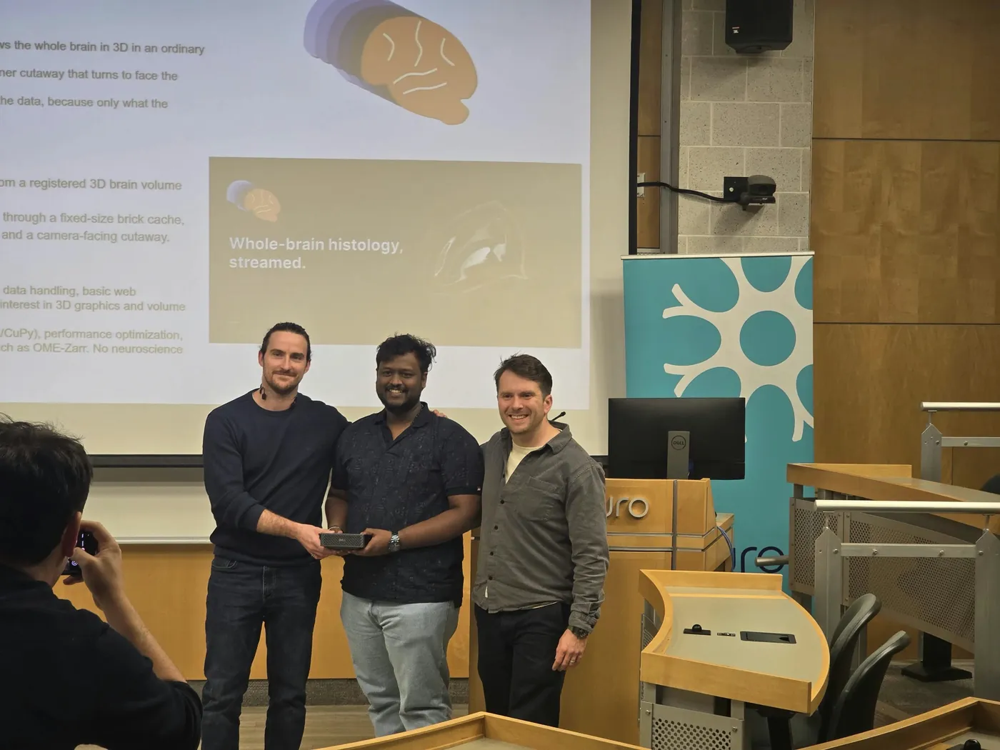

Whole-brain histology, streamed. Every frame in this story was rendered by it.
Scroll
A whole brain, in any browser.
This is BigBrain: one human brain, sectioned at 20 µm and reconstructed in 3D. Open the Mind renders it on a server GPU and streams the frames to the browser, which only has to show them.
Cut it open anywhere.
Three sliders move x, y and z cut planes, or a corner cutaway turns to face the camera as the brain rotates.
Then zoom into the cut.
The cut faces sharpen from the coarse overview down to the data's native resolution. A coarser level fills in while the fine bricks load.
Fixed memory, at any resolution.
The unit of work, and of memory, is what the screen needs, never the whole volume. From 26 to 278 GB of data, GPU memory stays at the size of the brick pool.
Whole-brain histology at cellular resolution runs from terabytes to petabytes. Today's tools either show it as 2D slices or load the whole volume into memory before rendering.
Neither lets a researcher see the whole brain in 3D, cut it open anywhere and zoom into the cut, from an ordinary browser.
Open the Mind does. It builds a multi-resolution brick pyramid without loading the volume whole, renders it on the GPU through a fixed-size brick cache, and streams frames to a browser page with sliders and orbit, pan and zoom.
60 fps
A 1080p camera flight on a laptop RTX 5060, in 1.4 GB of GPU memory.
278 GB
From 26 to 278 GB of data, the same 30 s flight holds 60 fps on a GB10, with GPU memory fixed at the 4 GB brick pool.
2.5 min
To build a 138.5 GB raw volume into a 24.1 GB multi-resolution pyramid.
1 kernel
Ray casting, early termination, empty-space skipping and cut planes, fused into one Triton kernel.
How it works
01
Pyramid
Reads the volume slab by slab within a memory budget and writes compressed, sharded bricks of 16 × 128 × 128 voxels as OME-Zarr 0.5. Empty background bricks are not stored.
02
Brick cache
A fixed GPU brick pool with a page table and least-recently-used eviction. Rays request missing bricks; a coarser level fills in while the fine ones load.
03
Ray caster
One fused Triton kernel: front-to-back compositing, early ray termination, empty-space skipping, cut planes as kernel arguments.
04
Streaming
JPEG frames encoded on the GPU with nvJPEG and pushed over a WebSocket: low resolution while dragging, sharp when the view stops.
05
Browser
One 3D view, three cut planes, a camera-facing cutaway, orbit, pan and zoom, colour maps and windowing.

The Neuro, Montréal · 18–19 October 2026
Voted the winning project of the BigBrain Hackathon 2026.
Built at the hackathon, held just before the 10th BigBrain Workshop. The workshop participants voted it the winner; the prize was a Dell Pro Max with NVIDIA GB10, presented by the organisers, Gregory Kiar and Thomas Funck.
Software · BigBrain Hackathon 2026 · CC BY-NC 4.0
Open the Mind: streaming out-of-core visualisation of high-resolution 3D volumes
Chrisline Sam C
One command sets it up on public BigBrain data: it checks the machine, installs what is needed, builds the pyramid within 2 GB of RAM and GPU memory, and starts the viewer.
Tested on a laptop RTX 5060, a GB10 (DGX Spark) and an A100.
Handles the full BigBrain: 7,404 sections of 6572 × 5711 pixels, 278 GB as voxels.